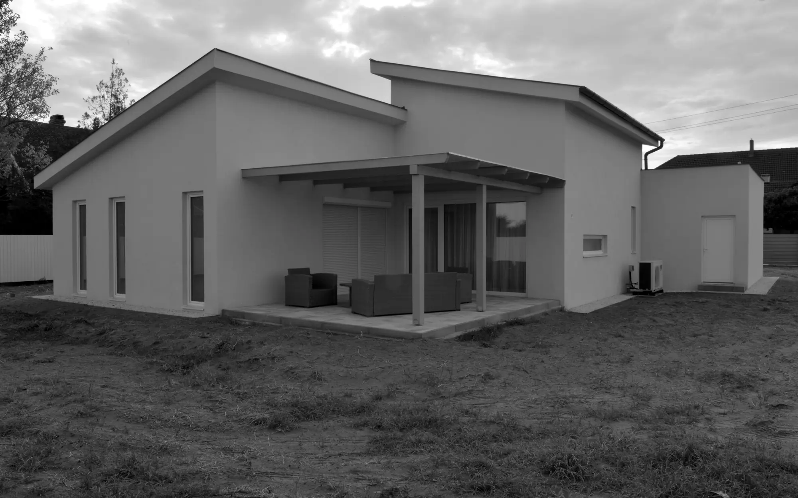

Építőipari kivitelezés Baján: családi ház, bővítés, felújítás. Alapoktól a kulcsátadásig, egy kézben.
Családi ház, bővítés, felújítás. Baján és 100 km-es körzetben dolgozunk. Egy cég, egy felelős az alapozástól a kulcsátadásig.
Referenciáink →Három gyors kérdés, hogy felkészülten hívjuk.
Az elküldés nem sikerült. Kérjük, hívjon: +36 30 532 8127
24 órán belül hívjuk.
Egyeztetünk egy időpontot az ingyenes helyszíni felmérésre, utána tételes, írásos ajánlatot kap.
Egy cég.
Minden szakág.
Alapozás · kőműves munkák · tetőfedés · gépészet · villanyszerelés · burkolás · homlokzat · nyílászárók. Nem kell külön szakembereket keresnie és összehangolnia: mi szervezzük, mi felelünk érte.
Referenciák.
Elkészült és jelenleg épülő munkáink. Ilyet szeretne? Beszéljünk róla.
Négy lépés.
Egy ház.
Kattintson a lépésekre, és nézze, hogyan épül fel a háza az első hívástól a kulcsig.
- Az 1. lépés ingyenes Kérem a felmérést →
Gyakori kérdések.
Amit a megrendelők leggyakrabban kérdeznek építés előtt.
Milyen területen dolgozik a Modern Konstrukt?
Bajai székhellyel, körülbelül 100 km-es körzetben vállalunk munkát. Készült már munkánk Baján, Sükösdön, Érsekcsanádon és Kecskeméten is. Ha a települése határeset, keressen bátran, és közösen megnézzük.
Milyen építőipari munkákat vállalnak?
Új családi házak építését (szerkezetkész vagy kulcsrakész állapotig), bővítést (tetőtér-beépítés, oldalszárny, plusz szoba), épületfelújítást, valamint kisebb épületek, például garázs, hétvégi ház vagy kis üzlethelyiség építését 35 m²-ig.
Mennyibe kerül egy családi ház építése vagy felújítása?
Az ár a mérettől, a szerkezettől, a gépészeti és belső kialakítástól függ, ezért általános négyzetméterárat nem mondunk. Az ingyenes helyszíni felmérés után tételes, írásos árajánlatot kap a vállalt határidőkkel.
Ingyenes a helyszíni felmérés?
Igen. A helyszíni felmérés ingyenes és kötelezettségmentes: kimegyünk, megbeszéljük az igényeket, majd tételes, írásos ajánlatot küldünk.
Milyen gyorsan jelentkeznek ajánlatkérés után?
Telefonszámát megadva 24 órán belül visszahívjuk, és egyeztetünk időpontot a helyszíni felmérésre.
Van garancia a kivitelezésre?
Igen, a kivitelezésre 2 év garanciát vállalunk. Az elkészült munkát részletes ellenőrzés és közös bejárás után, dokumentáltan adjuk át.
Kell külön szakembereket keresnem és összehangolnom?
Nem. Egy cég, egy felelős: az alapozástól a kulcsátadásig mi szervezzük a szakágakat (kőműves munkák, tetőfedés, gépészet, villanyszerelés, burkolás, homlokzat, nyílászárók), és mi felelünk értük.
Hogyan zajlik egy építés a Modern Konstruktnál?
Négy lépésben: 1. helyszíni felmérés, 2. tételes, írásos árajánlat, 3. kivitelezés személyes kapcsolattartással az egész idő alatt, 4. dokumentált átadás közös bejárással.
Ki vezeti a céget?
A Modern Konstrukt Építőipari Kft. ügyvezetője Varga András Tamás építőmérnök, aki a megrendelőkkel is személyesen tartja a kapcsolatot.
Baja.
És 100 km.
Baján és 100 km-es körzetben dolgozunk. Nem biztos, hogy a települése belefér? Keressen bátran, beszéljük meg.
„Számomra az építés nem csupán szakma, hanem az alkotás öröme is. Különleges érzés látni, ahogyan egy elképzelésből kézzelfogható, értéket teremtő otthon születik. Munkám során a műszaki precizitásra, a minőségi kivitelezésre, a részletek iránti igényességre és a megrendelői elképzelések megvalósítására egyaránt nagy hangsúlyt fektetek. Hiszem, hogy a valódi minőség a gondos tervezésben, a felelős döntésekben és a részletekre fordított figyelemben rejlik.”
Kezdjük
a felméréssel.
Ingyenes és kötelezettségmentes. Kimegyünk, felmérjük, és tételes, írásos ajánlatot kap.